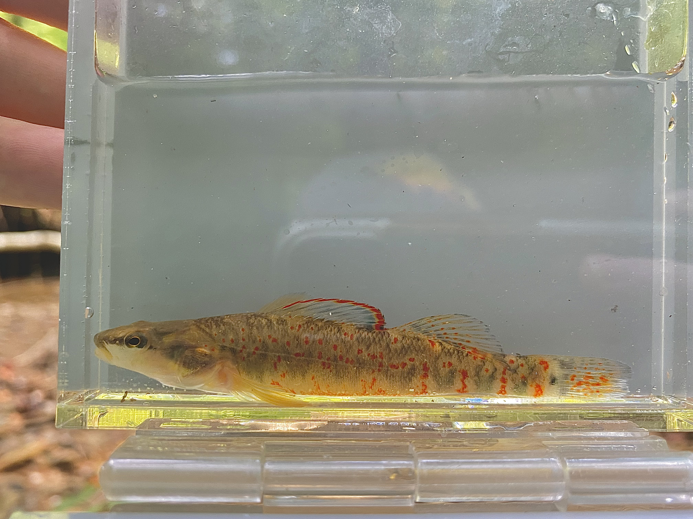
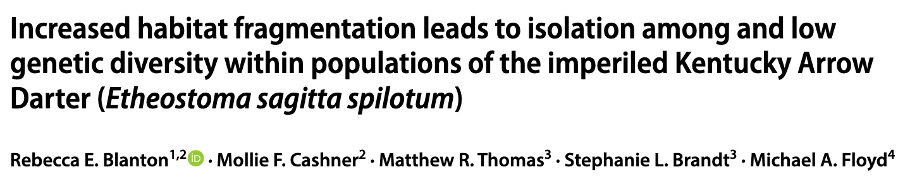

Graduate Thesis Resarch
Loss of forest cover leads to population isolation in an imperiled, headwater-specialist fish.
Johansen Lab, Austin Peay State University
Clarksville, Tennessee

The imperiled Kentucky Arrow Darter (KAD), Etheostoma spilotum , is endemic to first and second order streams in the upper Kentucky River system and has experienced substantial declines in occurrence and population size over the past several decades. Declines are attributed to extensive habitat degradation, particularly from mining activities and deforestation. To evaluate the potential effects of surface mining and other landscape variables on population connectivity, we performed isolation by resistance and distance models using genetic distance calculated from eleven microsatellite loci and resistance mapping of multiple landscape variables. We created multiple resistance surfaces from landscape variables that are known to influence KAD occurrence, including elevation, presence of dams, stream order, and percent landcover (agriculture, urbanization, forest cover, and surface mining). We created a cumulative resistance surface from the individual surface layers to calculate cumulative resistance among populations using the R package gdistance; resistance values for each variable were assigned from the literature. Cumulative resistance was correlated with FST values using a linear mixed effects model in R package corMLPE. FST values indicated a high level of genetic fixation between KAD populations. Analysis of single and multi-surface resistance modeling showed that decreased forest cover is linked to high genetic differentiation, suggesting that land use practices leading to deforestation, such as surface mining, agriculture, and urbanization, contribute to genetic isolation of KAD populations.
Historically, KAD experienced gene flow across its range, but populations are currently isolated with signatures of recent reductions in genetic diversity, likely due to recent habitat degradation and fragmentation. This prompted our research to examine the influence of anthropogenic land uses on KAD population connectivity.

Abstract
Previous Studies